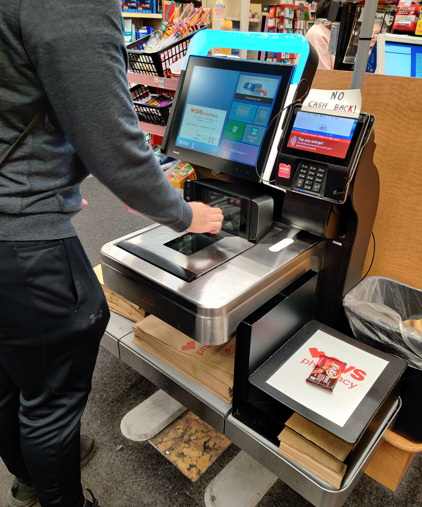

CVS Self-Checkout Station
UI/UX Research
Interview Questions
The following questions were asked to three self-checkout users:
- Why did you decide to use the self-checkout station rather than go to the cashier?
- Does the self-checkout station make your shopping experience more efficient? Why or why not?
- Were you able to easily scan the barcodes and select a payment method?
- Did you have any difficulties using the touchscreen?
- Was there something you wish the self-checkout machine could do?
Sketch & Description
The CVS Self-Checkout Station allows customers to complete their
transaction without store staff.
User Instructions
- Scan item using the barcode scanner
- Place product on scale where the weight is matched with the store’s records.
- Repeat until all items have been scanned.
- Follow instructions on the touchscreen to use coupons and/or complete the payment.
Key Observations
Three people were observed using the self-checkout machine. Below is a summary of observations of their actions.
- Some users needed to try multiple times to input a number or backspace because of an incorrect input.
- Some users use the bottom barcode scanner by moving the item straight across with the barcode facing down whereas other users face the barcode towards the machine.
- Most users used a contactless payment method by tapping their card or phone to the payment system screen.
- Sometimes the scale did not recognize when a scanned item was placed upon it, so users had to lift the item and place it back on the scale.
- A staff member is needed to delete an item in case it is scanned multiple times by mistake.
Responses
The responses to the interview questions are summarized below:
- Most users knew exactly what to do when using the machine. The big buttons indicating the next task made the steps clear.
- The touchscreen provided some difficulties for multiple users. It was sometimes unresponsive or would recognize the incorrect input.
- The machine is not optimal for cash customers. One user noted that needing to smooth out the bill before feeding it to the machine is a major inconvenience.
- Some users use the machine not for efficiency’s sake, but to avoid human interaction. Other users reported using the machine because the line for the cashier was too long.
Personas
Two personas were created based on overarching trends amongst all the users that were observed and interviewed.
Antisocial Anna
Antisocial Anna is a college student who is self-conscious and
dislikes interactions with strangers. She just moved into a new
off-campus apartment and wants to buy room decor and snacks.
Cash-user Clay

Cash-user Clay is an engineering student paying his own way through
college. He works 2 part-time jobs, both paid in cash, while
juggling his intensive coursework. He doesn't usually use the
self-checkout station, but decides to try it since the cashier line
is so long.
Storyboard
Antisocial Anna has just moved into her new apartment and realizes
the walls look barren without any decorations.

Anna makes a trip to CVS to purchase room decor, hoping to make
her residence less soul-sucking.
She purchases a few command hooks, poster hanging material, and
snacks.
She looks at the apathetic cashier, dreading human interaction,
but then sees the illustrious self-checkout machine.
She approaches an open machine and scans an item to begin.
After she scans the item, she can see a running sum of number of
items and total price.
She places her items in the weighing area one by one after they
are scanned.
She taps her phone on the payment screen and completes her
transaction.
Anna calmly purchases her items without needing to converse with a
single soul. She rejoices.